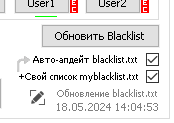

| Ник | Пост | Дата |
|---|---|---|
| drunkdazed | Файл больше не обновляется, я отредактировала ссылку как было рекомендовано в другой теме и всё равно ничего не изменилось. | 2024-05-16T10:33:19.370Z |
| RZ0(RZ0) | Присоединяюсь к вопросу. | 2024-05-18T10:00:06.036Z |
| TOPER(TOPER) | Все загружает.  | 2024-05-18T11:07:11.138Z |
| RZ0(RZ0) | В версии 0.2.2 без лаунчера не обновляет. | 2024-05-18T11:49:15.706Z |
| drunkdazed | У вас, может, и загружает, а у меня - нет. | 2024-05-20T00:11:29.948Z |
| drunkdazed | У меня такая же ошибка, как здесь. | 2024-05-20T00:13:43.365Z |
| ValdikSS | 2024-05-20T02:02:27.397Z | |
| slvrphnx1(Slvrphnx1) | для тупых, че делать с этой ссылкой?.. как сделать так чтобы оттуда брало домены? | 2024-07-31T15:08:03.227Z |
| Sta1ker | Вышла новая версия 0.2.3rc1, там уже все поправлено. | 2024-07-31T16:44:39.230Z |
| slvrphnx1(Slvrphnx1) | установил, все работало до определенного момента, ютуб в рандомный момент времени просто отказывается работать и говорит что нет сети(хотя она естественно есть), жопа какая то | 2024-07-31T20:53:52.975Z |
| drunkdazed | Эта проблема не решена в новой версии, кстати. | 2024-08-11T07:56:20.609Z |
| Cryptor(Sergey) | У меня обновляется нормально. Использую это - 0_russia_update_blacklist_file | 2024-08-11T10:44:02.429Z |
{kind=link}